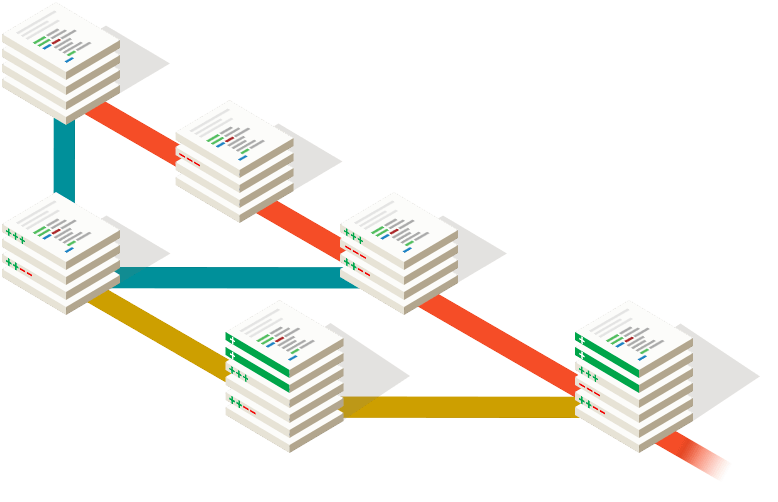
代码安全有保障，不怕丢失
每次改动都有据可查
随时回退到任意历史版本
多设备、多成员同步
多人并行开发不冲突
RCS、patch
单机保存版本
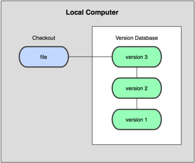
CVS、Subversion、Perforce
中央服务器统一管理
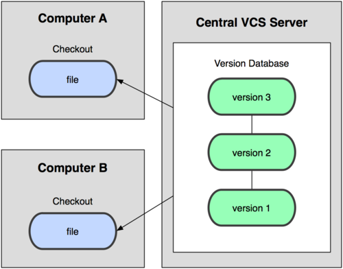
Git、Mercurial、Bazaar、Darcs
每人都有完整仓库
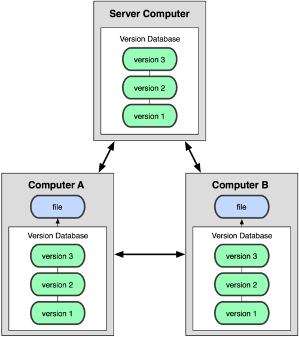
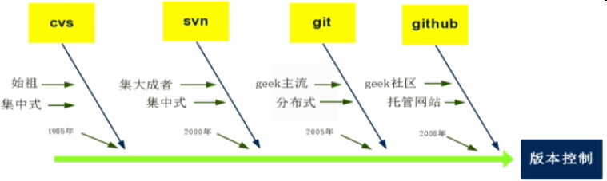
处理飞快
架构清晰
支持上千个并行分支
每人都有完整仓库
高效管理 Linux 内核级项目
生态繁荣
差异系统每版只存增量（Δ），快照系统每版存完整快照
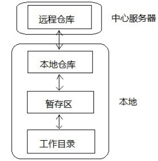
24b9da65…cd6d3b00373）官网下载 Install for Windows → 一路 Next → 开始菜单打开 Git Bash
终端执行 git --version，若提示安装 Xcode 命令行工具则按提示装
git --version 显示版本号即安装成功
msysgit.github.io
Git BASH · Git GUI
git-scm.com/downloads/guis
GitHub for Windows · SourceTree
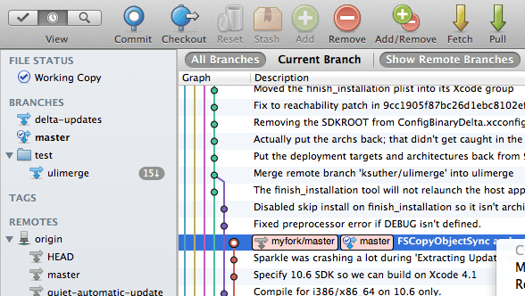
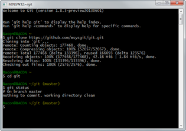
Git 托管平台：GithubGitlabGit.oschina.netbitbucket
用 git config 配置：用户信息、文本编辑器、差异分析工具、查看配置信息
在工作目录中修改某些文件
对修改后的文件进行快照，保存到暂存区域
提交更新，将暂存区快照永久转储到本地仓库
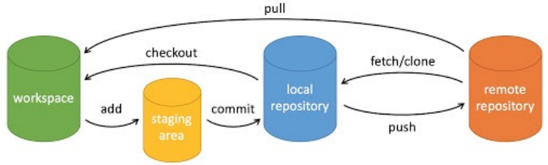
| 操作 | 命令 |
|---|---|
| 克隆 / 新建仓库 | git init / clone |
| 增加（跟踪/暂存）文件 | git add |
| 提交至本地仓库 | git commit |
| 从远程仓库拉取 | git pull |
| 从远程仓库获取 | git fetch |
| 推送至远程仓库 | git push |
| 检出分支 | git checkout |
| 建立分支 | git branch |
| 合并分支 | git merge |
| 状态查看 | git status |
| 提交日志查看 | git log |
| 改动在哪 | 回滚命令 |
|---|---|
| 只在工作区（未 add） | git restore <file> / git restore . |
| 已暂存（已 add） | git restore --staged <file> 再 git restore <file> |
| 已提交（已 commit） | git reset（删）或 git revert（反向提交） |
.gitignore，把想忽略的文件名写进去notes.txt、Mac 隐藏文件 .DS_Storegit status.gitignore 本身要提交进仓库（规则随项目走）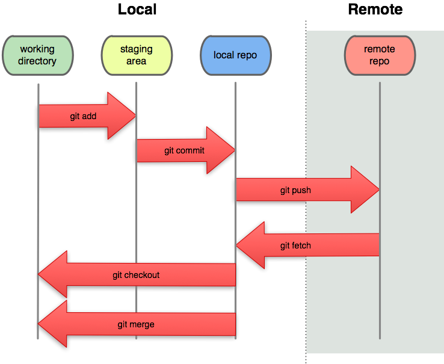
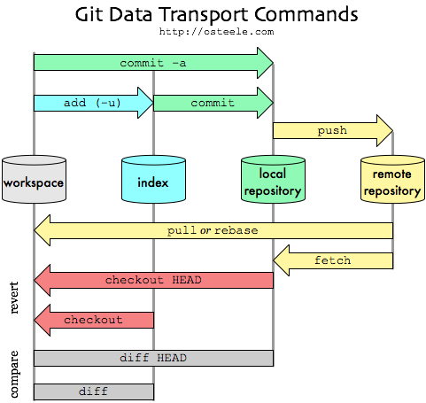
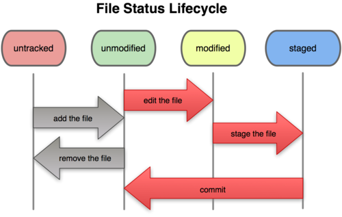
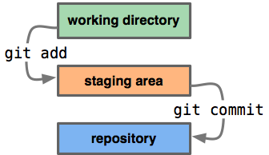
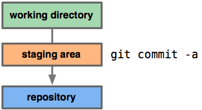
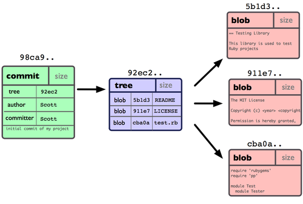
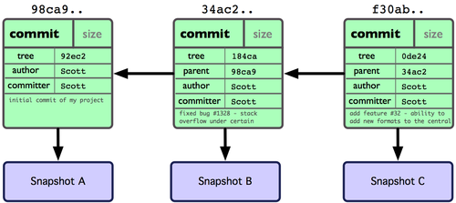
一次提交包含 tree、parent、author、committer 等信息；多次提交通过 parent 链接成链
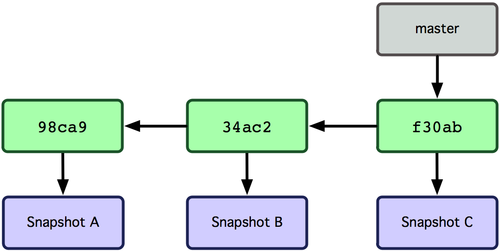
分支是「指向 commit 的指针」，HEAD 指向当前分支；提交让当前分支前进
开发某网站，为实现新需求创建分支开展工作；此时突然接到紧急电话，需要紧急修补线上问题。
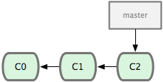
按 → 键或点按钮，逐步观看分支演进
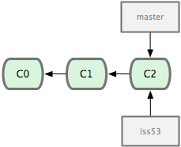
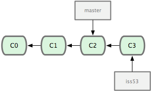
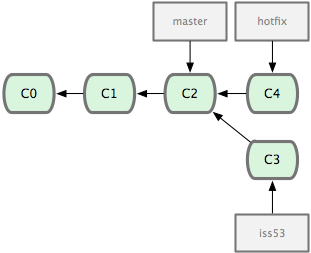
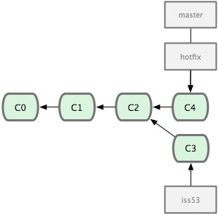
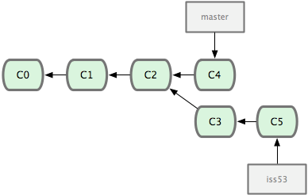
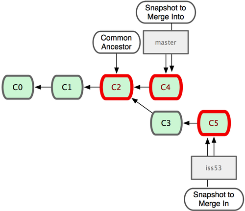
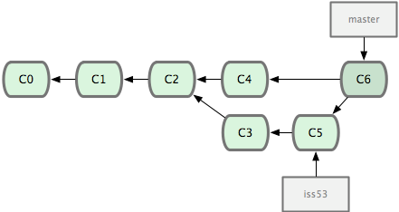
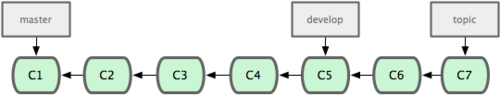
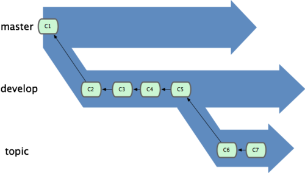
在 git@osc 平台创建 master/develop/topic 分支；只有管理员对 master 有写权限；develop 稳定后合并到 master
从远程 clone 项目；本地跟踪 develop/topic；在 topic 上开发；发现问题新建 iss1 修复后合并回 topic 并推送
将成员更新 pull 到本地；评审 topic 最新代码；合并远程 topic 与 develop；通知队员获取最新项目
无分叉，当前分支直接「快进」，无需新 commit
分叉了，Git 新造一个 commit 接两边
把 feature 挪到 master 最新位置后，冲突趁少解决
临时收起未提交改动，忙完 pop 取回
多工作目录并行开发
master，代码永远可发布，设 protected 分支保护pull request → review 通过后合并 → 立即发布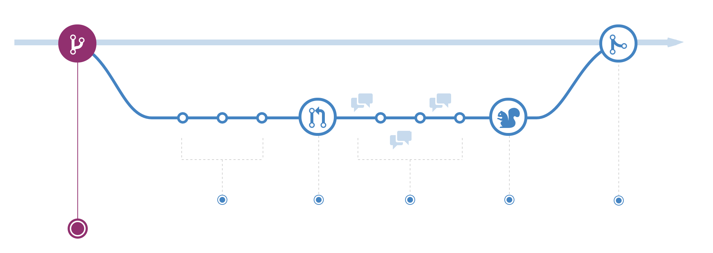
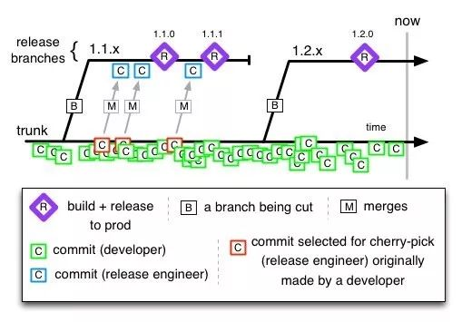
课程项目源代码托管：git.oschina.net、www.github.com（注册账号、仓库地址登记）
以前 Git 防的是自己改坏代码，现在 Git 防的是 AI 改坏代码
你越依赖 AI，就越需要 Git 兜底
为什么更重要
AI 代码怎么提交
管住 AI 的 Git 操作
AI 辅助 Git
AI 时代的分支协作
点「模拟 AI 误执行」看代码被删，再用 reflog 一步步找回
| 操作 | 是否允许 AI 自主执行 |
|---|---|
| git add / commit / branch / diff / log / status | ✅ 可自主 |
| git push / reset --hard / rebase / merge | ⚠️ 必须人确认 |
| 修改 protected 分支（master / main） | ⛔ 禁止，走 review |
丢给 AI 一段 git diff，生成规范提交说明
让 AI 解释冲突、建议怎么解决
让 AI 生成忽略规则、解读 git log 历史
—— 第五讲完 ——